工作導向插課：設計、審查與除錯 Faro 自動導入 Skill
你要能審查一個 Agent Skill：它是否真的找到 Frontend 的執行路徑、補上最小 Faro 變更，並用 Browser 與 Grafana 的資料驗收。這堂課不要求你重建觀測平台，也不改變主線 Lesson 順序。
本課的 runtime example 都標成 Jeter stage demo。先看畫面，再用短解釋建立模型；完整 raw evidence 放在課後來源，不是主要操作路徑。
概念圖｜先找，再決定改什麼
Agent 不應一拿到 repo 就貼入 Faro 初始化。先回答「應用從哪裡啟動」與「真正的 API request 從哪裡送出」，才能避免改到沒有被 Browser 執行的檔案。
| 先找的實物 | 它回答什麼 | 找不到怎麼辦 |
|---|---|---|
package-lock.json、yarn.lock、pnpm-lock.yaml | package manager 與可重現的指令 | 讀 repo 既有 script，不要猜指令。 |
| entry point、Faro dependency、初始化 | Faro 是否已在 Browser 啟動 | 已有初始化先檢查，避免雙重初始化。 |
| runtime config、backend base URL | 部署後實際呼叫哪個 API | 向專案取得環境 URL，不要硬編碼 Jeter URL。 |
fetch、XHR、axios、custom wrapper | 哪個程式送出 business request | 追 wrapper，並用 Browser Network 確認。 |
Foreman 是 Angular、Jeter 是 React；它們只提供辨識方法的對照。參考：Foreman source evidence、Jeter source evidence。
因果圖｜兩個 request，兩個目的
traceparent tobackendUrls 是 tracing instrumentation 用來匹配業務 API URL 的設定概念；它不是 Alloy receiver URL。Business request 也不是 telemetry export request。即使 header 傳出去了，Frontend span 還是要靠 Path B 送到 Tempo，Backend span 也要有自己的 export。
參考：trace context、Browser → Alloy、Collector pipeline。
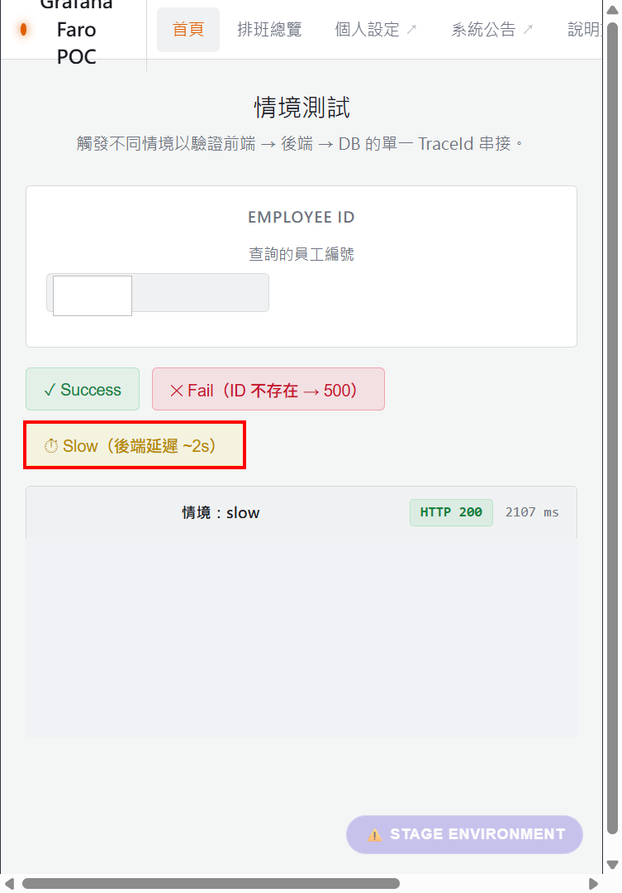
先記住操作，而不是先背 ID：按一次 Slow，接著在 Network 找同一個 business request。
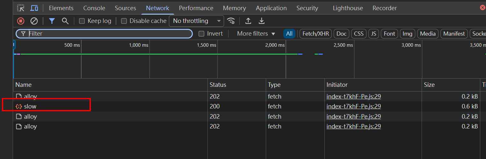
slow row，不要把旁邊的 /alloy POST 當成 business request。隱私檢查後底圖你現在看到的是 Path A 的 request。下一個觀察是它的 Request Headers，因為跨 Browser 與 Backend 的 relationship 會放在那裡。
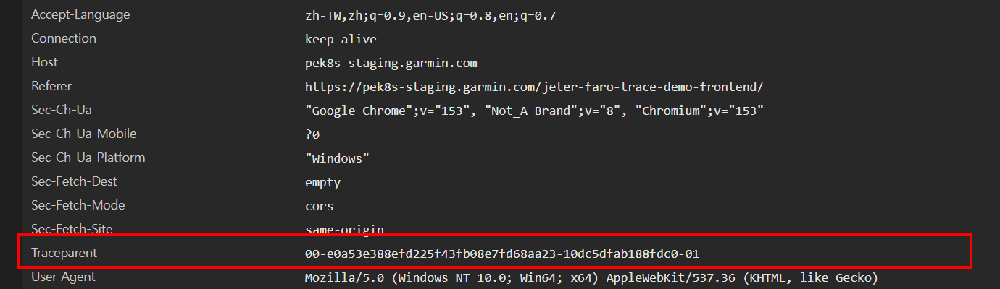
traceparent。完整 header 是本次 request 的 runtime observation，不是設定檔推論。隱私檢查後底圖先不用背整串。只取兩個值：T 是整條 trace，A 是 Browser 這個 client span。
把 header 讀成關係
這是格式的教學簡化；真實值在上方 screenshot 與 evidence source。完整 W3C 格式參考 traceparent reference。
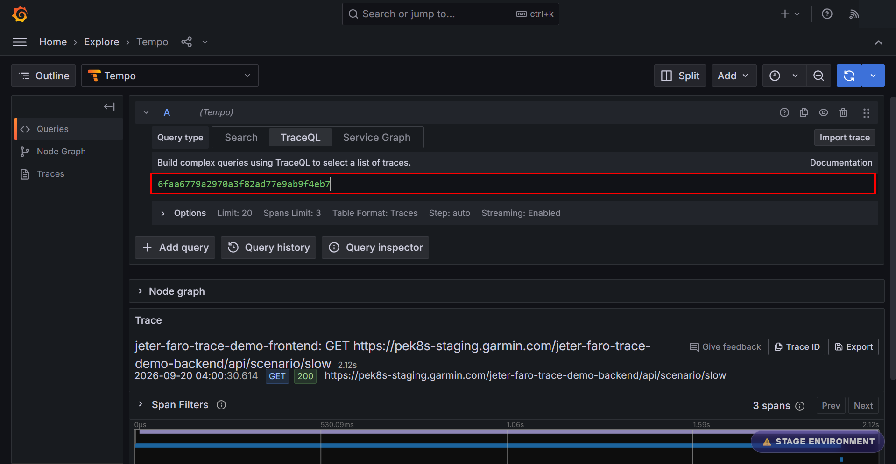
查詢欄的 T 是 e0a53e… 這一筆 runtime trace。圖中的省略只為了降低 working-memory 負擔；不要拿另一筆 trace 的 ID 來比。
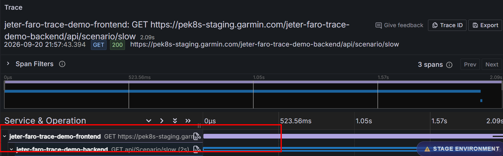
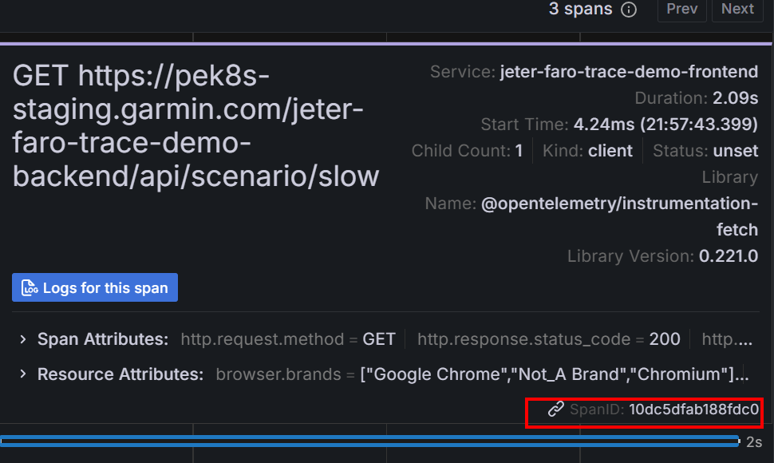
Evidence comparison diagram｜來自同一筆 Tempo runtime API projection，非 Grafana UI
10dc5dfab188fdc010dc5dfab188fdc0因此這一筆 Jeter Slow request 的結論是：
traceparent 帶出 T 與 A；Tempo 查到同一個 T；Backend server span 的 parent 是 A。這是這一筆 request 的證明，不是所有 endpoint 或所有 Frontend repo 的保證。本次 T 為 e0a53e388efd225f43fb08e7fd68aa23；Frontend A 為 10dc5dfab188fdc0；Backend server span 為 ceb5e675fed3017a，其 parent 為 A。去敏 projection 與限制見 visual runtime evidence。Raw projection 保留在 raw evidence。
traceparent，不是在 Console 猜 trace ID。做什麼：在有授權的 Jeter stage demo 開啟 DevTools → Network，清空舊列，按一次 Slow，再選 GET 的 scenario/slow。
看哪裡：Headers → Request Headers → traceparent。把當次 T 與 A 記到私人筆記，不要把 credential 或 cookie 存進 repo。
判斷：有 header 才能繼續查關係；HTTP 200 只證明 API 回應成功。沒有 header 時，檢查實際 URL 是否匹配 propagation pattern、HTTP wrapper 是否被 instrumentation 覆蓋，以及 CORS 是否允許 header。
做什麼：到有權限的 Grafana Explore，選 Tempo，貼上當次 trace ID。
判斷：同一 T 加上 Frontend client 與 Backend server 才是第一層證據；Backend parent = Frontend span 才完成 join。只有其中一端時，先查該端的 telemetry export 或 context extraction。
Capability map｜Faro Web SDK v2.9.0
initializeFaro()先建立 Browser telemetry baselineconsole.info / console.warn / console.error預設 console capture；console.error 預設轉成 error signalconsole.log、console.debug、console.trace；若你的 Skill 要「所有 console levels」，必須另外調整 console instrumentation。所以未來 Skill 裡的「Browser console log baseline」不能寫成模糊的「Faro 會把所有 console.* 都收走」。目前版本預設收 info / warn / error；其中 console.error() 預設走 Faro error path。若公司 baseline 想連 console.log()、debug、trace 都收，就要把這件事當成明確的額外設定，而不是 SDK default。
| Browser signal | v2.9.0 baseline | Skill 要知道的邊界 |
|---|---|---|
| uncaught exception | 自動 capture | 屬於 Errors instrumentation；不是 console log。 |
console.info() | 預設 capture | 送成 log signal。 |
console.warn() | 預設 capture | 送成 log signal。 |
console.error() | 預設 capture | 預設轉成 error signal；可配置成 log。 |
console.log() / debug / trace | 預設不 capture | 若需求要收，Skill 必須顯式調整 console instrumentation。 |
| fetch / XHR API request | 不是 basic Web SDK tracing baseline | 要加入 @grafana/faro-web-tracing 的 TracingInstrumentation；Section 5 再把它放進 Skill baseline。 |
版本化依據：Faro baseline capability evidence。這裡描述 SDK capability；目標 repo 是否真的有啟用，仍要由 Agent 檢查 source 與 runtime。
因果圖｜這只是 baseline 裡的一條 error path
exceptions[]這次使用 Jeter stage 的受控錯誤 marker OTEL_VISUAL_CHECK_20260920_B。它是 unique test identifier，不是時間戳，也沒有改動業務資料。因為沒有觀察到安全的 error button，這一段是 Evidence Walkthrough，不是要求 learner 注入 exception 的 Lab。這筆 evidence 證明的是 uncaught error path；它不是整個 console capability map 的替代品。
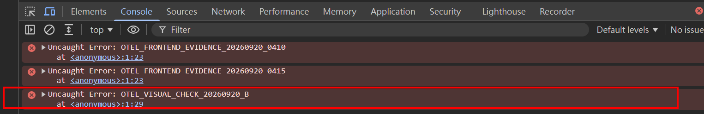
第一個 boundary 已證明：Browser 有 error。接著看同一個 marker 是否進入 Faro 的 outbound payload。
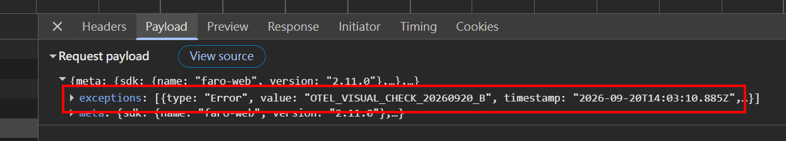
exceptions[]。這證明 Faro capture 了它並準備送出；隱私檢查後底圖。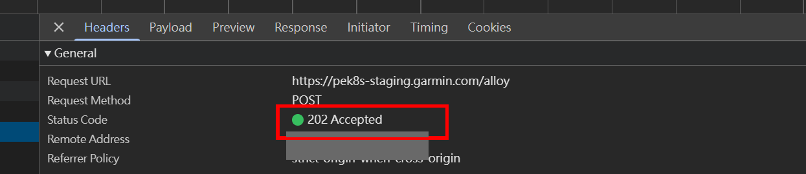
Boundary diagram｜202 的證明範圍
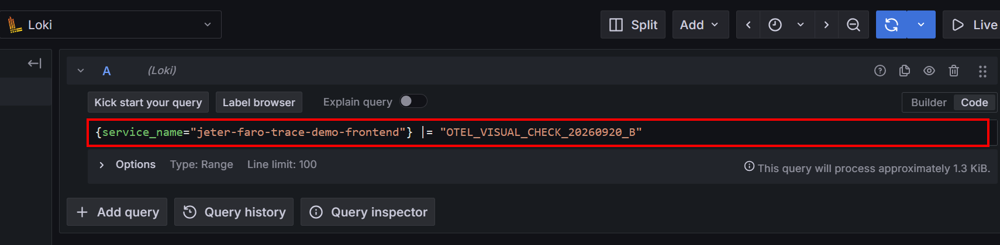
這裡不是用舊的 Foreman dashboard query。查詢條件必須與當前 runtime service 和 marker 相符。
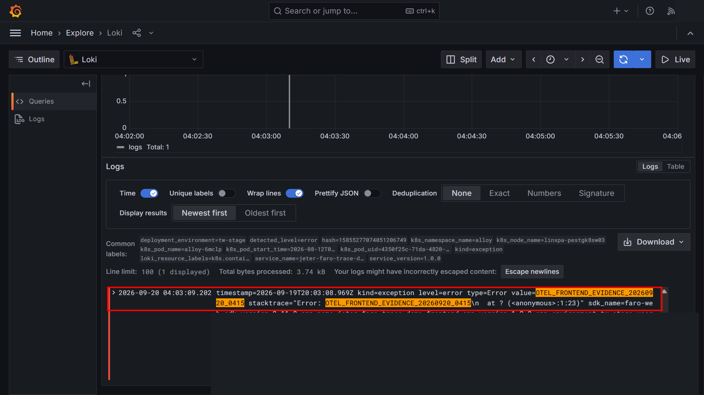
Total: 1，而且 exception row 含相同 marker、kind=exception、level=error。隱私檢查後底圖現在才可以下這筆 runtime evidence 的完整結論：同一個 marker 從 Browser uncaught error → Faro exceptions[] → receiver 202 → Grafana Loki result 被對上。這證明一條 error path；它不等於「所有 console levels 都已在這次 capture 逐一測過」。Collector 的 record-specific receive/export metrics 也沒有在本次 capture 取得，因此不能把每一個 Collector hop 寫成已逐跳觀察。
| 觀察 | 這次能證明 | 還不能證明 |
|---|---|---|
| Console marker | Browser 真的發生這筆 uncaught error | 其他 console levels 的 runtime capture |
exceptions[] | Faro 把這筆 error 放進 outbound payload | downstream storage 可查 |
| HTTP 202 | receiver 接受 request | Loki 一定有資料 |
| Loki Total: 1 | 這筆 marker 在 Grafana 可查 | 所有 Collector hop 都有逐筆 metrics |
SDK baseline capability 見 Faro baseline capability evidence；這筆 Jeter runtime 的完整去敏紀錄在 visual runtime evidence 與 raw projection。既有 Alloy → Collector → Loki 路徑屬於 source/config evidence；本次只把 receiver acceptance 與 Loki visibility 分開驗證，沒有改 dashboard 或 production data。
Mental model｜先建立最低觀測能力，再談客製化
Baseline 是你要為 Skill 定義的最低能力，不等於所有 Faro SDK default。例如 basic Web SDK 已經會收 uncaught errors 與預設 console levels，但 API request tracing 要再加入 @grafana/faro-web-tracing 的 TracingInstrumentation。它的 default OTel setup 才會 instrument fetch / XHR。換句話說，未來 Skill 應該檢查「能力有沒有存在」，而不是只檢查「package 有沒有安裝」。
Baseline target｜第一版 Skill 最少要能建立／確認
TracingInstrumentation讓 fetch / XHR 產生 frontend HTTP tracing databackendUrls / propagateTraceHeaderCorsUrls 決定 trace context 要送到哪些 backend；它不是 request-capture list| Baseline capability | Agent 要查什麼 | 缺少時才做什麼 |
|---|---|---|
| Web SDK / transport | dependency、初始化位置、app metadata、receiver/environment | 在真正 entry path 做最小初始化；不要建立第二個 instance。 |
| Console / error | 目前 console instrumentation 與 levels；Errors instrumentation | 保留 SDK default；只有需求明確要求更多 levels 時才調整。 |
| API request tracing | 是否有 @grafana/faro-web-tracing / TracingInstrumentation；實際 request 是 fetch、XHR 或 wrapper | 補 tracing capability，並以 Browser Network / Tempo 驗證。 |
| Cross-origin propagation | 實際 backend URL、propagation pattern、CORS | 只對需要串 distributed trace 的 backend 設定 pattern；實際 origin/header policy 是 project-specific value。 |
| Grafana visibility | 正確 datasource、service/app identity、query 與 time range | 查第一個沒有 evidence 的 boundary，不從 Grafana 空白直接猜 code 壞了。 |
backendUrls 再確認一次TracingInstrumentation 會對 fetch / XHR 做 HTTP tracing；backendUrls（對應 propagateTraceHeaderCorsUrls）處理的是「哪些 backend URL 要帶 W3C trace context」。因此：API request instrumentation ≠ propagation URL allow-list。
Design flow｜不要先選技術，再硬找需求
data-link-name / subsystem通用 Skill 應自動處理「怎麼找、怎麼判斷、怎麼驗證」；project-specific 的 URL 值與 business semantics 則來自 repo/runtime 或 user requirement，不能從 Foreman 推廣。
| Stage | Agent 工作 | 核心判斷 |
|---|---|---|
| Inspect | framework、package manager、entry point、Faro、runtime config、HTTP mechanism | 先理解現況，不要預設檔案路徑或 framework。 |
| Baseline audit | console/error、TracingInstrumentation、backend URLs、receiver/environment | 區分 SDK default、額外 tracing capability、project-specific values。 |
| Modify | 只補缺少的 capability，保留既有 business instrumentation | 避免雙重初始化或重寫現有 HTTP client。 |
| Verify | build/test → Browser → receiver → storage → Grafana；有 backend tracing 再驗證 same trace / parent | 設定存在不等於 runtime 成功。 |
| Extend | baseline 無法回答 business question 時才設計 custom instrumentation | 先推導需要的 data，再選 extension mechanism。 |
business question → required data → Click Listener / ClickInstrumentation / attributes / callbacks → Grafana answer。這不是撰寫第一版 Faro Skill 前的 blocker，所以目前只留下後續入口。
Capability boundary：Faro baseline capability map。既有 Agent 檢查項目的 evidence basis 仍在 skill-design findings。
Failure tree｜Grafana 沒有 error
exceptions[] 有同一 marker 嗎？Failure tree｜Frontend / Backend trace 沒接起來
traceparent 嗎？URL、HTTP client、CORS？審查 Agent 結果時，記三欄：預期、實際觀察、證據位置。只有設定時寫「configuration verified」；有 Browser header 不等於 Tempo join；有 202 不等於 Loki visibility。
traceparent，可以宣稱 Tempo 一定有完整 frontend + backend trace 嗎？data-link-name 寫成每個 repo 的必要欄位嗎？traceparent；Faro 的 /alloy POST 送 telemetry，兩條路徑分開驗證。exceptions[]、202 與 Loki result 完成對應；逐筆 Collector hop 仍保留為未觀察 boundary。data-link-name 與 subsystem 是 project-specific，不是通用 Faro requirement。完成這堂工作導向插課後，回到 Learning Map，繼續目前主線位置。